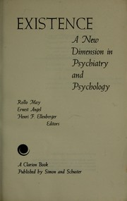

Existence: A New Dimension in Psychiatry and Psychology
Book·Rollo May, Ernest Angel, Henri F. Ellenberger (eds.), 1958·存在：精神病学和心理学的新方向

A collection of essays that introduced European existential analysis and phenomenological psychiatry to American readers.
- Author
- Rollo May, Ernest Angel, Henri F. Ellenberger (eds.)
- Year
- 1958
- Difficulty
- Advanced
- Kind
- History
- Schools
- Existential Psychotherapy
Editions
- English edition Existence: A New Dimension in Psychiatry and Psychology Rollo May, Ernest Angel, Henri F. Ellenberger (eds.) · Basic Books, first edition · 1958 Open Library ↗